import numpy as np
import sympy
import matplotlib as mpl
import matplotlib.pyplot as plt
mpl.rcParams['font.size'] = 12.0Appendix L — Matplotlib: Plotting and Visualization
M Matplotlib: Plotting and Visualization
Matplotlibis a Python library for publication-quality 2D and 3D graphics, with support for a variety of different output formatsMore information about
matplotlibis available at the project’s web site https://matplotlib.orgThis gallery is a great source of inspiration for visualization ideas, and I highly recommend exploring
matplotlibby browsing this gallery
M.1 Importing matplotlib
print('matplotlib:', mpl.__version__)
print('numpy: ', np.__version__)
print('sympy: ', sympy.__version__)matplotlib: 3.10.0
numpy: 2.3.1
sympy: 1.14.0M.2 Getting started
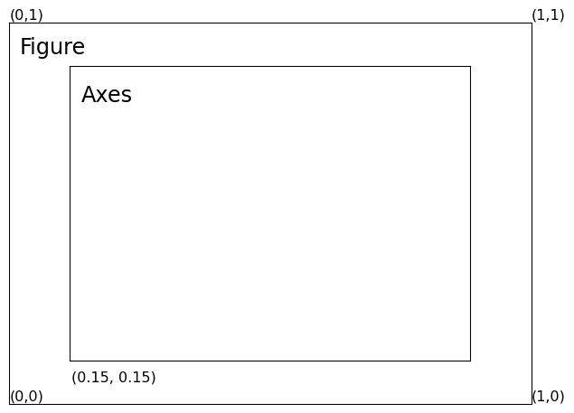
x = np.linspace(-5, 2, 100)
y1 = x**3 +5*x**2 +10
y2 = 3*x**2 +10*x
y3 = 6*x +10
#---------------------------------------
fig, ax = plt.subplots(figsize=(6, 4))
ax.plot(x, y1, color="blue", label="$y(x)$")
ax.plot(x, y2, color="red", label="$y'(x)$")
ax.plot(x, y3, color="green", label="$y''(x)$")
ax.set_xlabel("$x$")
ax.set_ylabel("$y$")
ax.legend()
plt.show()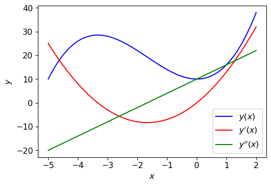
fig, ax = plt.subplots(figsize=(6, 4))
ax.plot(x, y1, lw=1.5, color="blue", label=r"$y(x)$")
ax.plot(x, y2, lw=1.5, color="red", label=r"$y'(x)$")
ax.plot(x, y3, lw=1.5, color="green", label=r"$y''(x)$")
ax.plot(x, np.zeros_like(x), lw=0.5, color="black")
ax.plot([-3.33], [(-3.33)**3 + 5*(-3.33)**2 + 10],
lw=0.5, marker='o', color="blue")
ax.plot([0], [10], lw=0.5, marker='o', color="blue")
ax.plot([-3.33, -3.33], [0, (-3.33)**3 + 5*(-3.33)**2 + 10],
ls='--', lw=0.5, color="black")
ax.plot([0, 0], [0, 10], ls='--', lw=0.5, color="black")
ax.set_xlim([-5, 2.5])
ax.set_xticks([-5, -2.5, 0, 2.5])
ax.set_ylim(-20, 40)
ax.set_yticks([-20, -10, 0, 10, 20, 30, 40])
ax.set_xlabel("$x$", fontsize=14)
ax.set_ylabel("$y$", fontsize=14)
ax.legend(loc=2, ncol=3, fontsize=14, frameon=False)
plt.show()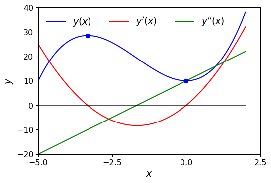
M.3 Figure
x = np.linspace(-2, 2, 1000)
y1 = np.cos(40*x)
y2 = np.exp(-x**2)
#---------------------------------------
# the width and height of the figure canvas in inches
fig = plt.figure(figsize=(6, 3), facecolor="#f1f1f1")
# axes coordinates as fractions of
# the canvas width and height
left, bottom, width, height = 0.1, 0.1, 0.8, 0.8
ax = fig.add_axes((left, bottom, width, height),
facecolor="#e1e1e1")
ax.plot(x, y1 *y2)
ax.plot(x, y2, 'g')
ax.plot(x,-y2, 'g')
ax.set_xlabel("x")
ax.set_ylabel("y")
plt.show()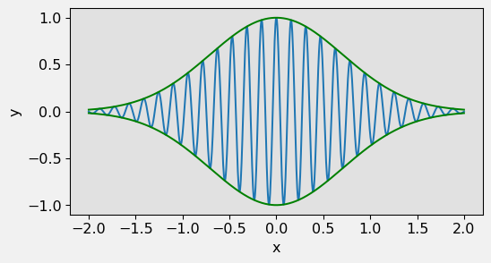
fig.savefig("./figures/matplotlib_savefig.png", dpi=100, facecolor="#f1f1f1")
fig.savefig("./figures/matplotlib_savefig.pdf", dpi=300, facecolor="#f1f1f1")M.4 Axes
Matplotlibprovides several differentAxeslayout managers, which create and placeAxesinstances within afigurecanvas following different strategiesTo facilitate the forthcoming examples, \(\,\)we here briefly look at one of these layout managers:
plt.subplotsEarlier in this appendix, \(\,\)we already used this function to conveniently generate new
FigureandAxesobjects in one function callHowever, \(\,\)the
plt.subplotsfunction is also capable of filling a figure with a grid ofAxesinstances, which is specified using the first and the second arguments, or alternatively with thenrowsandncolsarguments, which, as the names implies, creates a grid ofAxesobjects, \(\,\)with the given number of rows and columnsfig, axes = plt.subplots(nrows=3, ncols=2)Here, the function
plt.subplotsreturns a tuple(fig, axes), wherefigis afigureandaxesis anumpyarray of size(ncols, nrows), \(\,\)in which each element is anAxesinstance that has been appropriately placed in the correspondingfigurecanvas. \(\,\)At this point we can also specify that columns and/or rows should share x and y axes, using thesharexandshareyarguments, which can be set toTrueorFalseThe
plt.subplotsfunction also takes two special keyword argumentsfig_kwandsubplot_kw, which are dictionaries with keyword arguments that are used when creating theFigureandAxesinstances, respectively. This allows us to set and retain full control of the properties of theFigureandAxesobjects withplt.subplots, \(\,\)a similar way is possible when directly usingplt.figureand theadd_axesmethod
M.5 Plot types
Matplotlibimplements many types of plotting techniques as methods of theAxesobjectFor details, see Matplotlib’s plot types
def hide_labels(fig, ax, fignum):
ax.set_xticks([])
ax.set_yticks([])
ax.xaxis.set_ticks_position('none')
ax.yaxis.set_ticks_position('none')
ax.axis('tight')
fignum += 1
#fig.savefig(f"./figures/plot_types_{fignum}.pdf")x = np.linspace(-3, 3, 25)
y1 = x**3 +3*x**2 +10
y2 = -1.5*x**3 +10*x**2 -15fig, ax = plt.subplots(figsize=(6, 4))
ax.plot(x, y1)
ax.plot(x, y2)
hide_labels(fig, ax, 1)fig, ax = plt.subplots(figsize=(6, 4))
ax.step(x, y1)
ax.step(x, y2)
hide_labels(fig, ax, 2)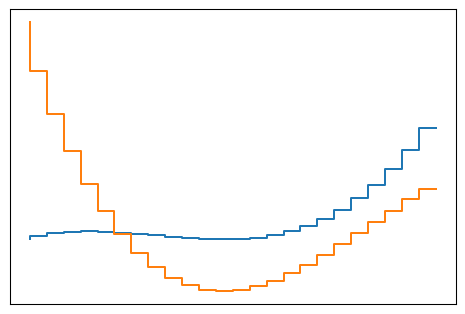
fig, ax = plt.subplots(figsize=(6, 4))
width = 6/50
ax.bar(x - width/2, y1, width=width, color="blue")
ax.bar(x + width/2, y2, width=width, color="green")
hide_labels(fig, ax, 3)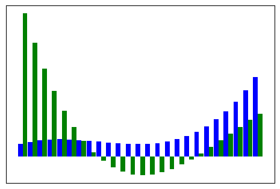
fig, ax = plt.subplots(figsize=(6, 4))
ax.hist(y2, bins=15, edgecolor="black")
ax.hist(y1, bins=15, edgecolor="black")
hide_labels(fig, ax, 4)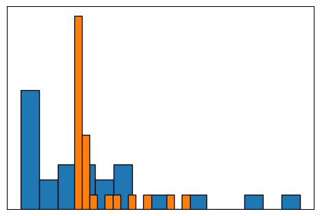
fig, ax = plt.subplots(figsize=(6, 4))
ax.errorbar(x, y2, yerr=y1, lw=0.6, fmt='--o', capsize=5)
hide_labels(fig, ax, 5)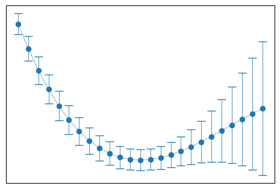
fig, ax = plt.subplots(figsize=(6, 4))
ax.fill_between(x, y1, y2, edgecolor="black")
hide_labels(fig, ax, 6)fig, ax = plt.subplots(figsize=(6, 4))
ax.stem(x, y1, linefmt='b', markerfmt='bs')
ax.stem(x, y2, linefmt='r', markerfmt='ro')
hide_labels(fig, ax, 7)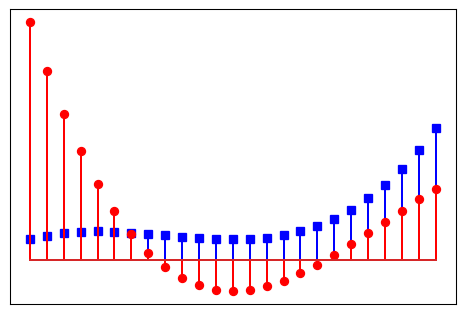
fig, ax = plt.subplots(figsize=(6, 4))
x = np.linspace(0, 5, 50)
ax.scatter(x, -1 +x +0.25*x**2 +2*np.random.rand(len(x)))
ax.scatter(x, np.sqrt(x) +2*np.random.rand(len(x)), color="green")
hide_labels(fig, ax, 8)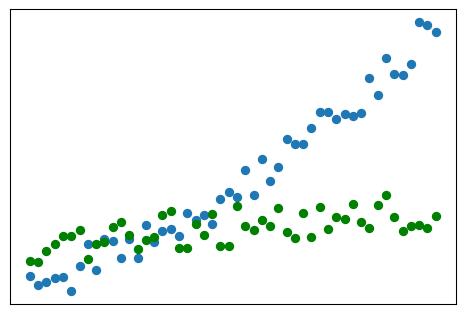
x = y = np.linspace(-np.pi, np.pi, 16)
X, Y = np.meshgrid(x, y)
U = np.sin(X)
V = np.cos(Y)
fig, ax = plt.subplots(figsize=(5, 5))
ax.quiver(X, Y, U, V)
hide_labels(fig, ax, 9)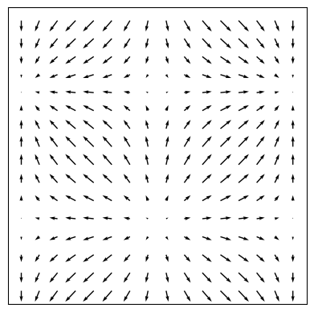
fig, ax = plt.subplots(figsize=(5, 5))
ax.streamplot(X, Y, U, V)
hide_labels(fig, ax, 9)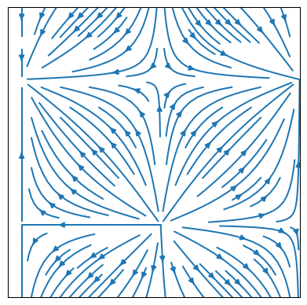
plt.style.use('_mpl-gallery')
# make data:
np.random.seed(10)
D = np.random.normal((3, 5, 4), (1.25, 1.00, 1.25), (100, 3))
# plot
fig, ax = plt.subplots(figsize=(5, 5))
VP = ax.boxplot(D,
positions=[2, 4, 6],
widths=1.5,
patch_artist=True,
showmeans=False,
showfliers=False,
medianprops={"color": "white", "linewidth": 0.5},
boxprops={"facecolor": "C0", "edgecolor": "white",
"linewidth": 0.5},
whiskerprops={"color": "C0", "linewidth": 1.5},
capprops={"color": "C0", "linewidth": 1.5})
ax.set(xlim=(0, 8), xticks=[],
ylim=(0, 8), yticks=[])
plt.show()plt.style.use('_mpl-gallery-nogrid')
# make data
x = [1, 2, 3, 4]
colors = plt.get_cmap('Blues')(np.linspace(0.2, 0.7, len(x)))
# plot
fig, ax = plt.subplots(figsize=(5, 5))
ax.pie(x, colors=colors, radius=3, center=(4, 4),
wedgeprops={"linewidth": 1, "edgecolor": "white"}, frame=True)
ax.set(xlim=(0, 8), xticks=[],
ylim=(0, 8), yticks=[])
plt.show()M.6 Line properties
- In
matplotlib, \(\,\)we set the line properties with keyword arguments to theplotmethods, such as for exampleplot,step,bar
def axes_settings(fig, ax, title, ymax):
ax.set_title(title)
ax.set_ylim(0, ymax +1)
ax.set_xticks([])
ax.set_yticks([])
x = np.linspace(-5, 5, 5)
y = np.ones_like(x)fig, ax = plt.subplots(figsize=(6, 4))
# Line width
linewidths = [0.5, 1.0, 2.0, 4.0]
for n, linewidth in enumerate(linewidths):
ax.plot(x, y + n, color="blue", linewidth=linewidth)
axes_settings(fig, ax, "linewidth", len(linewidths))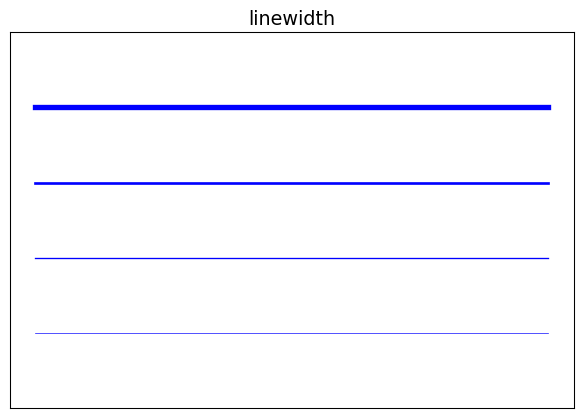
fig, ax = plt.subplots(figsize=(6, 4))
# Line style
linestyles = ['-', '--', '-.', ':']
for n, linestyle in enumerate(linestyles):
ax.plot(x, y + n, color="blue", linestyle=linestyle)
# Custom dash style
line, = ax.plot(x, y + len(linestyles), color="red", lw=2)
length1, gap1, length2, gap2 = 5, 2, 10, 2
line.set_dashes([length1, gap1, length2, gap2])
axes_settings(fig, ax, "linestyle", len(linestyles) + 1)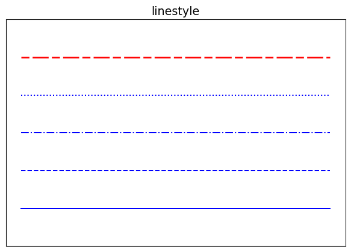
fig, ax = plt.subplots(figsize=(6, 4))
# Marker types
markers = ['+', 'o', '*', 's', '.', '1', '2', '3', '4']
for n, marker in enumerate(markers):
ax.plot(x, y + n, color="blue", lw=0, marker=marker)
axes_settings(fig, ax, "markers", len(markers))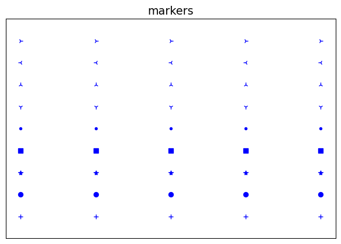
fig, ax = plt.subplots(figsize=(6, 4))
# Marker size and color
markersizeandcolors = [(4, "white"), (8, "red"), (12, "yellow"), (16, "lightgreen")]
for n, (markersize, markercolor) in enumerate(markersizeandcolors):
ax.plot(x, y + n, color="blue", lw=1, ls='-',
marker='o',
markersize=markersize,
markerfacecolor=markercolor,
markeredgewidth=2)
axes_settings(fig, ax, "marker size/color", len(markersizeandcolors))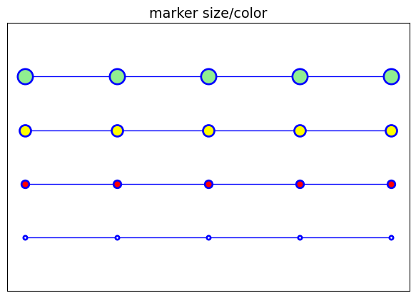
# a symboloc variable for x, and a numerical array with specific values of x
sym_x = sympy.Symbol("x")
x = np.linspace(-2*np.pi, 2*np.pi, 100)
def sin_expansion(x, n):
"""
Evaluate the n-th order Taylor series expansion of sin(x)
for numerical values in the numpy array x
"""
return sympy.lambdify(sym_x, sympy.sin(sym_x).series(n=n).removeO(), 'numpy')(x)fig, ax = plt.subplots(figsize=(6, 4))
ax.plot(x, np.sin(x), lw=4, color="red", label='exact')
colors = ["blue", "black"]
linestyles =[':', '-.', '--']
for idx, n in enumerate(range(2, 13, 2)):
ax.plot(x, sin_expansion(x, n),
color=colors[idx //3],
ls=linestyles[idx %3],
lw=3,
label=f'O({n})')
ax.set_xlim(-1.5*np.pi, 1.5*np.pi)
ax.set_ylim(-1.25, 1.25)
# place a legend outside of the Axes
ax.legend(bbox_to_anchor=(1.02, 1), loc=2, borderaxespad=0.0)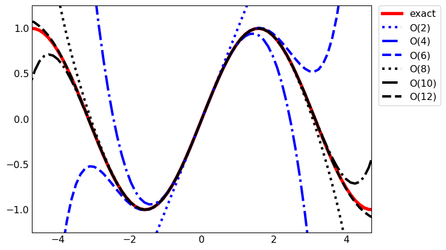
data1 = np.random.randn(200, 2) *np.array([3, 1])
data2 = np.random.randn(200, 2) *np.array([1, 3])
fig, axes = plt.subplots(2, 1, figsize=(6, 8), sharey=True)
axes[0].scatter(data1[:, 0], data1[:, 1], color="g", marker="s", s=30, alpha=0.5)
axes[0].scatter(data2[:, 0], data2[:, 1], color="b", marker="o", s=30, alpha=0.5)
axes[1].hist([data1[:, 1], data2[:, 1]],
bins=15,
color=["g", "b"],
alpha=0.5,
orientation='horizontal')
plt.show()M.7 Legends
See
help(plt.legend)for details. \(\,\)Thelocargument allows us to specify where in theAxesarea thelegendis to be added:loc=1for upper right corner,loc=2for upper left corner,loc=3for the lower-left corner, andloc=4for lower right cornerIn the example of the previous section, \(\,\)we used the
bbox_to_anchor, \(\,\)which helps thelegendbe placed at an arbitrary location within thefigurecanvas. Thebbox_to_anchorargument takes the value of a tuple on the form(x, y), \(~\)wherexandyare the canvas coordinates within theAxesobject. That is, \(\,\)the point(0, 0)corresponds to the lower-left corner, and(1, 1)corresponds to the upper right corner. \(\,\)Note thatxandycan be smaller than0and larger than1, in this case, which indicates that thelegendis to be placed outside theAxesarea, \(\,\)as was used in the previous sectionBy default, all lines in the
legendare shown in a vertical arrangement. Using thencolsargument, it is possible to split thelegendlabels into multiple columns
x = np.linspace(0, 1, 100)
fig, axes = plt.subplots(4, 1, figsize=(6, 12), sharex=True)
for n in range(4):
axes[n].plot(x, x, label="$y(x) = x$")
axes[n].plot(x, x +x**2, label="$y(x) = x + x^2$")
axes[n].legend(loc=n + 1)
axes[n].set_title(f'legend: loc={n + 1}')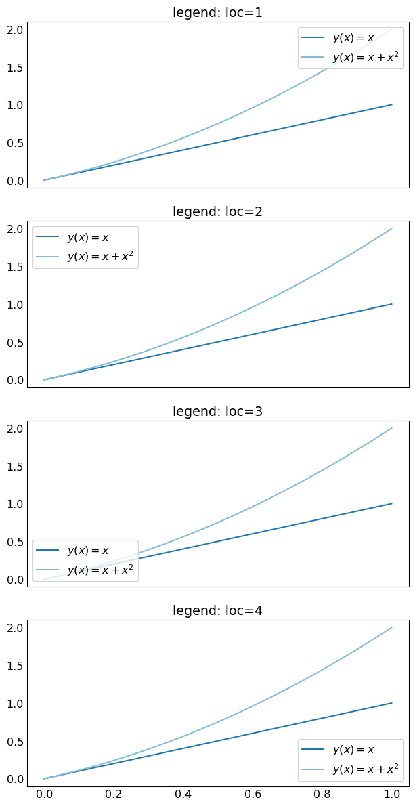
x = np.linspace(-1, 1, 100)
def linear_eqn(x, slope):
return slope *x
fig, ax = plt.subplots(figsize=(6, 3))
colors = ['blue', 'green', 'red', 'cyan',
'magenta', 'yellow', 'black', 'orange']
for slope in range(1, 9):
ax.plot(x,
linear_eqn(x, slope),
color=colors[slope -1],
label=f"$y(x)={slope:d}x$")
ax.set_xlim(-1, 1)
ax.set_ylim(-8, 8)
ax.tick_params(axis='x', pad=10)
ax.legend(bbox_to_anchor=(-0.01, 1.05), ncol=4, loc=3, borderaxespad=0.0)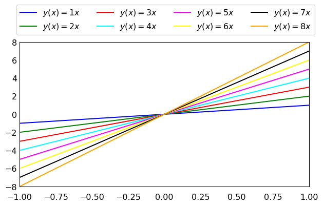
M.8 Text formatting and annotations
Matplotlibprovides several ways of configuring fonts properties. \(\,\)The default values can be set in thematplotlibresource file. \(\,\)To display where the currently activematplotlibfile is loaded from, \(\,\)one can do the following:mpl.matplotlib_fname()And session-wide configuration can be set in the
mpl.rcParamsdictionary: \(~\)for example,mpl.rcParams['font.size'] = 12.0Try
print(mpl.rcParams)to get a list of possible configuration parameters and their current valuesMatplotlibprovides excellent support for LaTeX markup within its text labels: Any text label inmatplotlibcan include LaTeX math by enclosing it within$signs: \(\,\) for example'Regular text: $f(x)=1-x^2$'By default, \(\,\)
matplotlibuses an internal LaTeX rendering, \(\,\)which supports a subset of LaTeX language. However, by setting the configuration parametermpl.rcParams['text.usetex']=True, \(~\)it is also possible to use an external full-featured LaTeX engineWhen embedding LaTeX code in strings there is a common stumbling block: Python uses
\as escape character, \(\,\)while in LaTeX it is used to denote the start of commands. \(\,\)To prevent the Python interpreter from escaping characters in strings containing LaTeX expressions, \(\,\)it is convenient to use raw strings, \(\,\)which are literal string expressions that are prepended with anr, \(\,\)for example:r"$\int f(x) dx$"andr'$x_{\rm A}$'
x = np.linspace(-20, 20, 100)
y = np.sin(x) /x
fig, ax = plt.subplots(figsize=(6, 4))
ax.plot(x, y)
ax.set_xlabel("x label")
ax.set_ylabel("y label")
for label in ax.get_xticklabels() +ax.get_yticklabels():
label.set_rotation(45)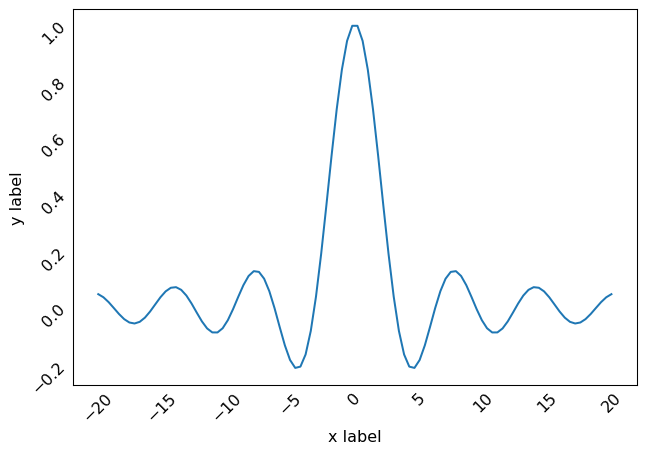
fig, ax = plt.subplots(figsize=(6, 3))
ax.set_xticks([])
ax.set_yticks([])
ax.set_xlim(-0.50, 3.50)
ax.set_ylim(-0.05, 0.25)
ax.axhline(0)
# text label
ax.text(0, 0.1, "Text label", fontsize=14, family="serif")
# annotation
ax.plot(1, 0, "o")
ax.annotate("Annotation", fontsize=14, family="serif",
xy=(1, 0),
xycoords="data",
xytext=(20, 50),
textcoords="offset points",
arrowprops=dict(arrowstyle="->", connectionstyle="arc3, rad=.5"))
# equation
ax.text(2, 0.1,
r"Equation: $i\hbar\partial_t \Psi = \hat{H}\Psi$",
fontsize=14, family="serif")
plt.show()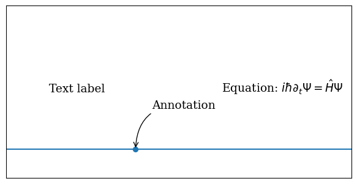
mpl.rc('font', family='NanumGothic')
mpl.rcParams['axes.unicode_minus'] = Falsedata = 1000 +np.random.randint(-100, 100, 50).cumsum()
fig, ax = plt.subplots(figsize=(6, 4))
ax.plot(range(50), data, 'r')
ax.set_title('시간대별 가격 추이')
ax.set_ylabel('주식 가격, [원]')
ax.set_xlabel('시간, [분]')
plt.show()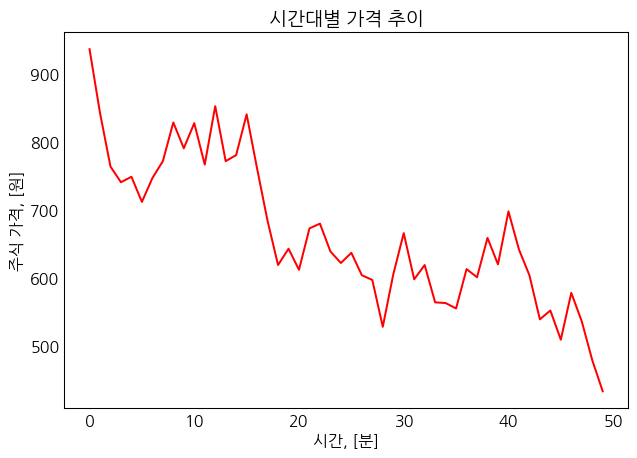
mpl.rc('font', family='serif')
mpl.rcParams['axes.unicode_minus'] = TrueM.9 Axis properties
M.9.1 Axis labels and titles
x = np.linspace(0, 50, 500)
y = np.sin(x) *np.exp(-x /10)
fig, ax = plt.subplots(figsize=(6, 2), subplot_kw={'facecolor': "#ebf5ff"})
ax.plot(x, y, lw=2)
ax.set_xlim([0, 50])
ax.set_ylim([-1.0, 1.0])
ax.set_xlabel("x", labelpad=5, fontsize=14, fontname='serif', color='blue')
ax.set_ylabel("f(x)", labelpad=5, fontsize=14, fontname='serif', color='blue')
ax.set_title("Axis labels and Title example",
fontsize=14, fontname='serif', color='blue', loc='center')
plt.show()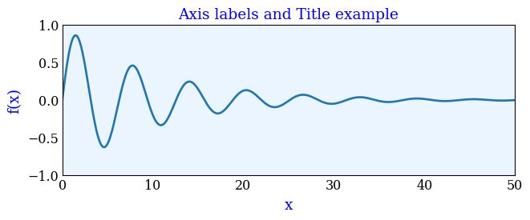
M.9.2 Axis range
x = np.linspace(0, 30, 500)
y = np.sin(x) *np.exp(-x /10)
fig, axes = plt.subplots(4, 1, figsize=(6, 12),
subplot_kw={'facecolor': '#ebf5ff'})
axes[0].plot(x, y, lw=2)
axes[0].set_xlim(-5, 35)
axes[0].set_ylim(-1, 1)
axes[0].set_title("set_[x/y]lim")
axes[1].plot(x, y, lw=2)
axes[1].axis('tight')
axes[1].set_title("axis('tight')")
axes[2].plot(x, y, lw=2)
axes[2].axis('equal')
axes[2].set_title("axis('equal')")
axes[3].plot(x, y, lw=2)
axes[3].autoscale(True)
axes[3].set_title("autoscale(True)")
plt.show()M.9.3 Axis ticks, tick labels, and grids
\(~\)
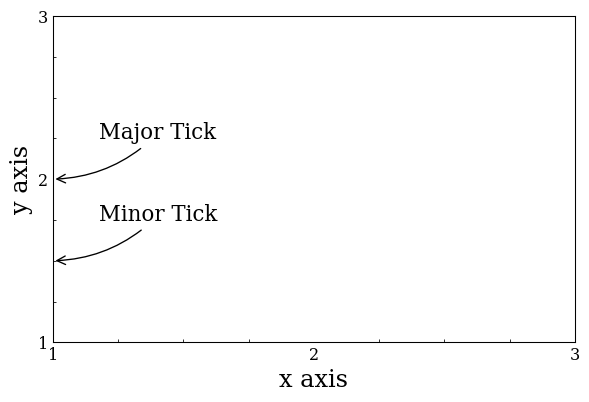
x = np.linspace(-2*np.pi, 2*np.pi, 500)
y = np.sin(x) *np.exp(-x**2/20)
fig, axes = plt.subplots(2, 1, figsize=(6, 8))
axes[0].plot(x, y, lw=2)
axes[0].set_title("default ticks")
axes[0].tick_params(which='both', direction='in')
axes[1].plot(x, y, lw=2)
axes[1].set_title("set_[x/y]ticks")
axes[1].set_xticks([-5, 0, 5])
axes[1].set_yticks([-1, 0, 1])
axes[1].tick_params(which='both', direction='in')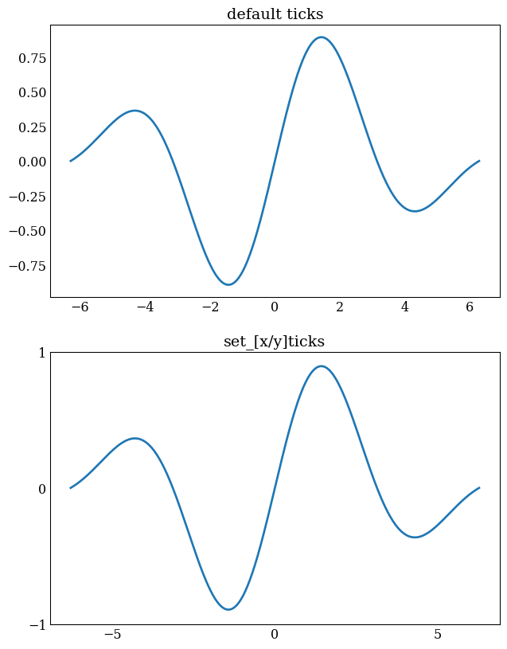
fig, axes = plt.subplots(2, 1, figsize=(6, 8))
axes[0].plot(x, y, lw=2)
axes[0].set_title("set_major/minor_locator")
axes[0].xaxis.set_major_locator(mpl.ticker.MaxNLocator(4))
axes[0].xaxis.set_minor_locator(mpl.ticker.MaxNLocator(8))
axes[0].yaxis.set_major_locator(mpl.ticker.MaxNLocator(4))
axes[0].yaxis.set_minor_locator(mpl.ticker.MaxNLocator(8))
axes[0].tick_params(which='both', direction='in')
axes[1].plot(x, y, lw=2)
axes[1].set_title("set_[x/y]ticklabels")
axes[1].set_xticks([-2*np.pi, -np.pi, 0, np.pi, 2*np.pi])
axes[1].set_xticklabels(['$-2\pi$', '$-\pi$', '$0$', '$\pi$', '$2\pi$'])
axes[1].xaxis.set_minor_locator(
mpl.ticker.FixedLocator([-3*np.pi/2, -np.pi/2, 0, np.pi/2, 3*np.pi/2]))
axes[1].set_yticks([-1, 0, 1])
axes[1].yaxis.set_minor_locator(mpl.ticker.MaxNLocator(8))
axes[1].tick_params(which='both', direction='in')<>:14: SyntaxWarning: invalid escape sequence '\p'
<>:14: SyntaxWarning: invalid escape sequence '\p'
<>:14: SyntaxWarning: invalid escape sequence '\p'
<>:14: SyntaxWarning: invalid escape sequence '\p'
<>:14: SyntaxWarning: invalid escape sequence '\p'
<>:14: SyntaxWarning: invalid escape sequence '\p'
<>:14: SyntaxWarning: invalid escape sequence '\p'
<>:14: SyntaxWarning: invalid escape sequence '\p'
/var/folders/4x/8kn2nym12cn7x7qmg_6s4b8h0000gn/T/ipykernel_43781/2527598018.py:14: SyntaxWarning: invalid escape sequence '\p'
axes[1].set_xticklabels(['$-2\pi$', '$-\pi$', '$0$', '$\pi$', '$2\pi$'])
/var/folders/4x/8kn2nym12cn7x7qmg_6s4b8h0000gn/T/ipykernel_43781/2527598018.py:14: SyntaxWarning: invalid escape sequence '\p'
axes[1].set_xticklabels(['$-2\pi$', '$-\pi$', '$0$', '$\pi$', '$2\pi$'])
/var/folders/4x/8kn2nym12cn7x7qmg_6s4b8h0000gn/T/ipykernel_43781/2527598018.py:14: SyntaxWarning: invalid escape sequence '\p'
axes[1].set_xticklabels(['$-2\pi$', '$-\pi$', '$0$', '$\pi$', '$2\pi$'])
/var/folders/4x/8kn2nym12cn7x7qmg_6s4b8h0000gn/T/ipykernel_43781/2527598018.py:14: SyntaxWarning: invalid escape sequence '\p'
axes[1].set_xticklabels(['$-2\pi$', '$-\pi$', '$0$', '$\pi$', '$2\pi$'])fig, axes = plt.subplots(3, 1, figsize=(6, 12))
for ax in axes:
ax.plot(x, y, lw=2)
ax.xaxis.set_major_locator(mpl.ticker.MultipleLocator(4))
ax.xaxis.set_minor_locator(mpl.ticker.MultipleLocator(0.5))
ax.yaxis.set_major_locator(mpl.ticker.MultipleLocator(1))
ax.yaxis.set_minor_locator(mpl.ticker.MultipleLocator(0.25))
axes[0].set_title("default grid")
axes[0].grid()
axes[1].set_title("major/minor grid")
axes[1].grid(color="blue", which="both", ls=':', lw=0.5)
axes[2].set_title("individual x/y major/minor grid")
axes[2].grid(color="gray", which="major", axis='x', ls='-', lw=0.5)
axes[2].grid(color="gray", which="minor", axis='x', ls=':', lw=0.25)
axes[2].grid(color="gray", which="major", axis='y', ls='-', lw=0.5)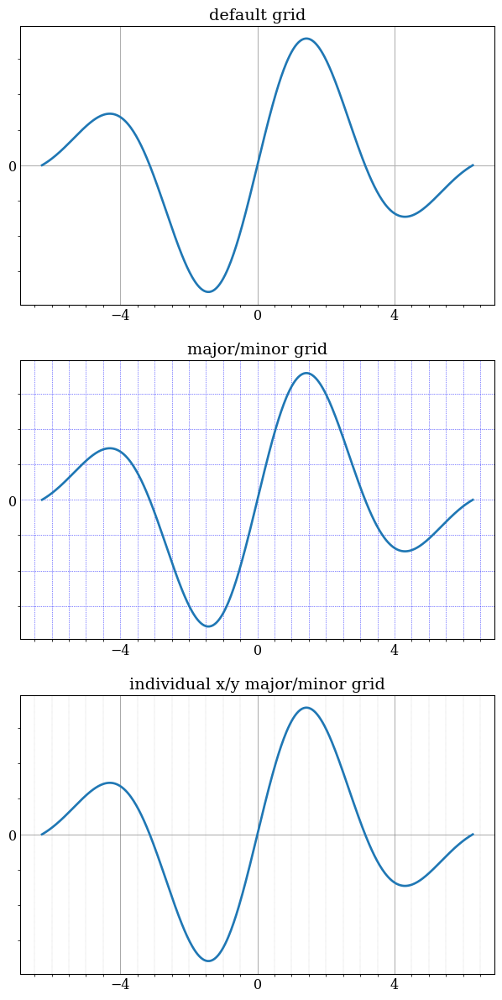
x = np.linspace(0, 1e5, 100)
y = x**2
fig, axes = plt.subplots(2, 1, figsize=(6, 8))
axes[0].plot(x, y, 'b.')
axes[0].set_title("default labels", loc='right')
axes[1].plot(x, y, 'b')
axes[1].set_title("scientific notation labels", loc='right')
formatter = mpl.ticker.ScalarFormatter(useMathText=True)
formatter.set_powerlimits((-1, 2))
axes[1].xaxis.set_major_formatter(formatter)
axes[1].yaxis.set_major_formatter(formatter)M.9.4 Log lots
x = np.linspace(0, 1e3, 100)
y1, y2 = x**3, x**4
fig, axes = plt.subplots(3, 1, figsize=(6, 12))
axes[0].set_title('loglog')
axes[0].loglog(x, y1, 'b', x, y2, 'r')
axes[1].set_title('semilogy')
axes[1].semilogy(x, y1, 'b', x, y2, 'r')
axes[2].set_title('plot set_[x/y]scale')
axes[2].plot(x, y1, 'b', x, y2, 'r')
axes[2].set_xscale('log')
axes[2].set_yscale('log')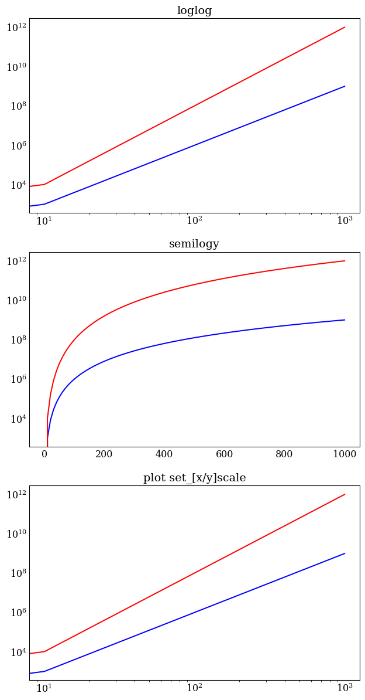
M.9.5 Twin axes
radius = np.linspace(0, 5, 100)
area = 4 *np.pi *radius**2 # area
volume = (4 *np.pi /3) *radius**3 # volumeig, ax1 = plt.subplots(figsize=(6, 4))
ax1.set_title("Surface area and Volume of a sphere", fontsize=16)
ax1.set_xlabel("radius, [m]", fontsize=16)
ax1.plot(radius, area, lw=2, color="blue")
ax1.set_ylabel(r"Surface area, [$m^2$]", fontsize=16, color="blue")
ax1.set_xlim(0, 5)
ax1.set_ylim(0, 350)
for label in ax1.get_yticklabels():
label.set_color("blue")
ax2 = ax1.twinx()
ax2.plot(radius, volume, lw=2, color="red")
ax2.set_ylabel(r"Volume, [$m^3$]", fontsize=16, color="red")
ax2.set_ylim(0, 600)
for label in ax2.get_yticklabels():
label.set_color("red")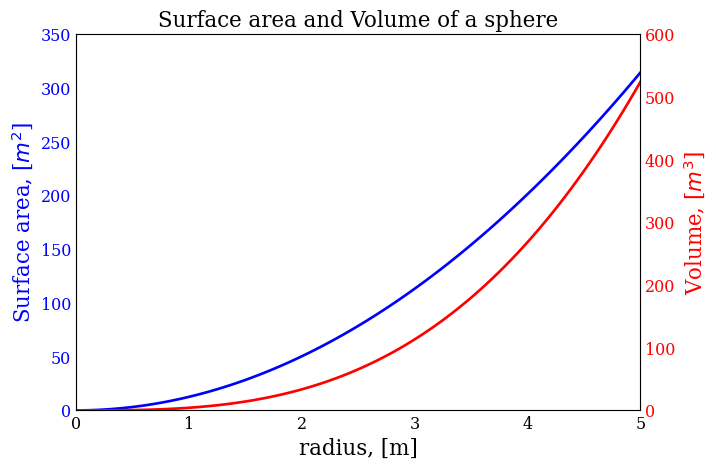
M.9.6 Spines
x = np.linspace(-10, 10, 500)
y = np.sin(x) /x
fig, ax = plt.subplots(figsize=(6, 4))
ax.plot(x, y, lw=2)
ax.set_xticks([-10, -5, 5, 10])
ax.set_yticks([0.5, 1])
# remove top and right spines
ax.spines['top'].set_color('none')
ax.spines['right'].set_color('none')
# set only bottom and left spine ticks
ax.xaxis.set_ticks_position('bottom')
ax.yaxis.set_ticks_position('left')
# move bottom and left spines to x = 0 and y = 0
ax.spines['bottom'].set_position(('data', 0))
ax.spines['left'].set_position(('data', 0))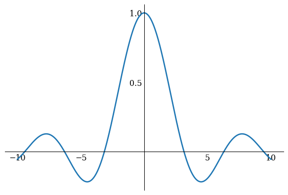
M.10 Advanced axes layouts
M.10.1 Insets
def f(x):
return 1 /(1 +x**2) +0.1 /(1 +((3 -x) /0.1)**2)
def plot_and_format_axes(ax, x, f, fontsize):
ax.plot(x, f(x), lw=2)
ax.xaxis.set_major_locator(mpl.ticker.MaxNLocator(5))
ax.yaxis.set_major_locator(mpl.ticker.MaxNLocator(4))
ax.set_xlabel("$x$", fontsize=fontsize)
ax.set_ylabel("$f(x)$", fontsize=fontsize)
for label in ax.get_xticklabels() +ax.get_yticklabels():
label.set_fontsize(fontsize)
ax.tick_params(which='both', direction='in')x = np.linspace(-4, 14, 1000)
fig = plt.figure(figsize=(6.5, 4))
# main graph
ax = fig.add_axes([0.1, 0.15, 0.8, 0.8], facecolor="#f5f5f5")
plot_and_format_axes(ax, x, f, 12)
x0, x1 = 2.5, 3.5
x = np.linspace(x0, x1, 1000)
ax.axvline(x0, ymax=0.3, color="gray", ls=':')
ax.axvline(x1, ymax=0.3, color="gray", ls=':')
# inset
ax1 = fig.add_axes([0.5, 0.5, 0.38, 0.42], facecolor='none')
plot_and_format_axes(ax1, x, f, 10)M.10.2 Subplots
x1 = np.random.randn(100)
x2 = np.random.randn(100)
# squeeze=False, the axes is always a two-dimensional array
fig, axes = plt.subplots(2, 2, figsize=(7, 7),
sharex=True,
sharey=True,
squeeze=False)
axes[0, 0].set_title("Uncorrelated", fontsize=12)
axes[0, 0].scatter(x1, x2)
axes[0, 1].set_title("Weakly positively correlated", fontsize=12)
axes[0, 1].scatter(x1, x1 +x2)
axes[1, 0].set_title("Weakly negatively correlated", fontsize=12)
axes[1, 0].scatter(x1,-x1 +x2)
axes[1, 1].set_title("Strongly correlated", fontsize=12)
axes[1, 1].scatter(x1, x1 +0.15*x2)
axes[1, 1].set_xlabel("x")
axes[1, 0].set_xlabel("x")
axes[0, 0].set_ylabel("y")
axes[1, 0].set_ylabel("y")
plt.subplots_adjust(left=0.1,
right=0.95,
bottom=0.1,
top=0.95,
wspace=0.1,
hspace=0.2)
M.10.3 Subplot2grid
def plot_and_format_axes(ax, ax_number):
ax.set_xlim(0, 6)
ax.set_ylim(0, 6)
ax.xaxis.set_major_locator(mpl.ticker.MaxNLocator(6))
ax.yaxis.set_major_locator(mpl.ticker.MaxNLocator(6))
ax.tick_params(which='both', direction='in', top=True, right=True)
ax.set_xticklabels([])
ax.set_yticklabels([])
ax.text(3, 3, f'ax{ax_number}',
horizontalalignment='center',
verticalalignment='center')plt.figure(figsize=(6, 6))
ax0 = plt.subplot2grid((3, 3), (0, 0))
ax1 = plt.subplot2grid((3, 3), (0, 1))
ax2 = plt.subplot2grid((3, 3), (1, 0), colspan=2)
ax3 = plt.subplot2grid((3, 3), (2, 0), colspan=3)
ax4 = plt.subplot2grid((3, 3), (0, 2), rowspan=2)
axes = [ax0, ax1, ax2, ax3, ax4]
for i in range(5):
plot_and_format_axes(axes[i], i)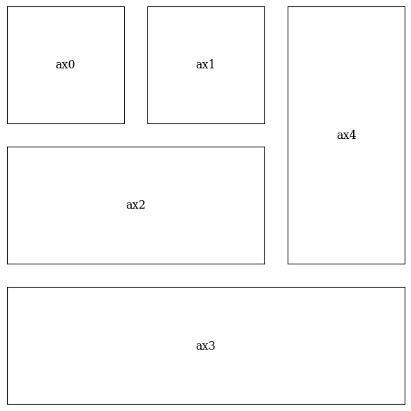
M.10.4 GridSpec
fig = plt.figure(figsize=(6, 6))
gs = mpl.gridspec.GridSpec(4, 4)
ax0, ax1 = fig.add_subplot(gs[0, 0]), fig.add_subplot(gs[1, 1])
ax2, ax3 = fig.add_subplot(gs[2, 2]), fig.add_subplot(gs[3, 3])
ax4, ax5 = fig.add_subplot(gs[0, 1:]), fig.add_subplot(gs[1:, 0])
ax6, ax7 = fig.add_subplot(gs[1, 2:]), fig.add_subplot(gs[2:, 1])
ax8, ax9 = fig.add_subplot(gs[2, 3]), fig.add_subplot(gs[3, 2])
axes = [ax0, ax1, ax2, ax3, ax4, ax5, ax6, ax7, ax8, ax9]
for i in range(10):
plot_and_format_axes(axes[i], i)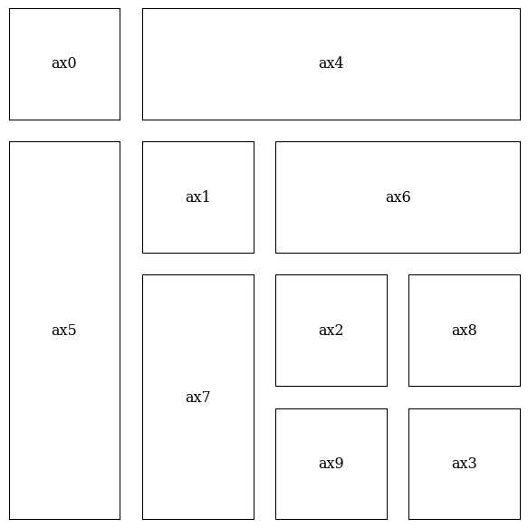
fig = plt.figure(figsize=(6, 6))
gs = mpl.gridspec.GridSpec(2, 2,
width_ratios=[4, 1],
height_ratios=[1, 4],
wspace=0.05,
hspace=0.05)
ax0 = fig.add_subplot(gs[1, 0])
ax1 = fig.add_subplot(gs[0, 0])
ax2 = fig.add_subplot(gs[1, 1])
axes = [ax0, ax1, ax2]
for i in range(3):
plot_and_format_axes(axes[i], i)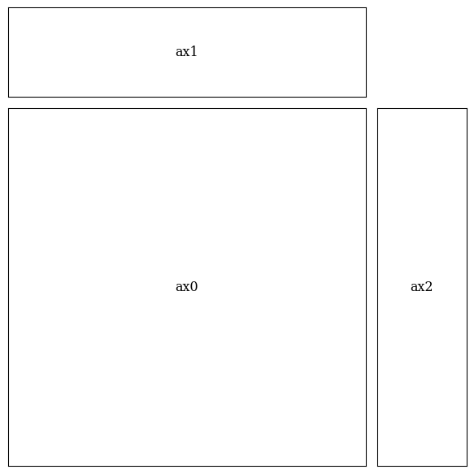
M.11 Colormap plots
x = y = np.linspace(-2, 2, 150)
X, Y = np.meshgrid(x, y)
R1 = np.sqrt((X +0.5)**2 +(Y +0.5)**2)
R2 = np.sqrt((X +0.5)**2 +(Y -0.5)**2)
R3 = np.sqrt((X -0.5)**2 +(Y +0.5)**2)
R4 = np.sqrt((X -0.5)**2 +(Y -0.5)**2)fig, ax = plt.subplots(figsize=(7, 6))
Z = np.sin(10 *R1) /(10 *R1) +np.sin(20 *R4) /(20 *R4)
Z = Z[:-1, :-1]
p = ax.pcolor(X, Y, Z, cmap='seismic', vmin=-abs(Z).max(), vmax=abs(Z).max())
ax.axis('tight')
ax.set_xlabel('x')
ax.set_ylabel('y')
ax.set_title('pcolor')
ax.xaxis.set_major_locator(mpl.ticker.MaxNLocator(4))
ax.yaxis.set_major_locator(mpl.ticker.MaxNLocator(4))
cb = fig.colorbar(p, ax=ax)
cb.set_label('z')
cb.set_ticks([-1, -.5, 0, .5, 1])fig, ax = plt.subplots(figsize=(7, 6))
Z = 1/R1 -1/R2 -1/R3 +1/R4
im = ax.imshow(Z, vmin=-1, vmax=1, cmap=mpl.cm.bwr,
extent=[x.min(), x.max(), y.min(), y.max()])
im.set_interpolation('bilinear')
ax.axis('tight')
ax.set_xlabel('x')
ax.set_ylabel('y')
ax.set_title('imshow')
ax.xaxis.set_major_locator(mpl.ticker.MaxNLocator(4))
ax.yaxis.set_major_locator(mpl.ticker.MaxNLocator(4))
cb = fig.colorbar(im, ax=ax)
cb.set_label('z')
cb.set_ticks([-1, -.5, 0, .5, 1])x = y = np.linspace(0, 1, 75)
X, Y = np.meshgrid(x, y)
Z = (-2 *np.cos(2 *np.pi *X) *np.cos(2 *np.pi *Y)
-0.7 *np.cos(np.pi -4 *np.pi *X))fig, ax = plt.subplots(figsize=(6, 6))
c = ax.contour(X, Y, Z, 15, cmap=mpl.cm.RdBu, vmin=-1, vmax=1)
ax.axis('tight')
ax.set_xlabel('x')
ax.set_ylabel('y')
ax.set_title("contour")
ax.xaxis.set_major_locator(mpl.ticker.MaxNLocator(4))
ax.yaxis.set_major_locator(mpl.ticker.MaxNLocator(4))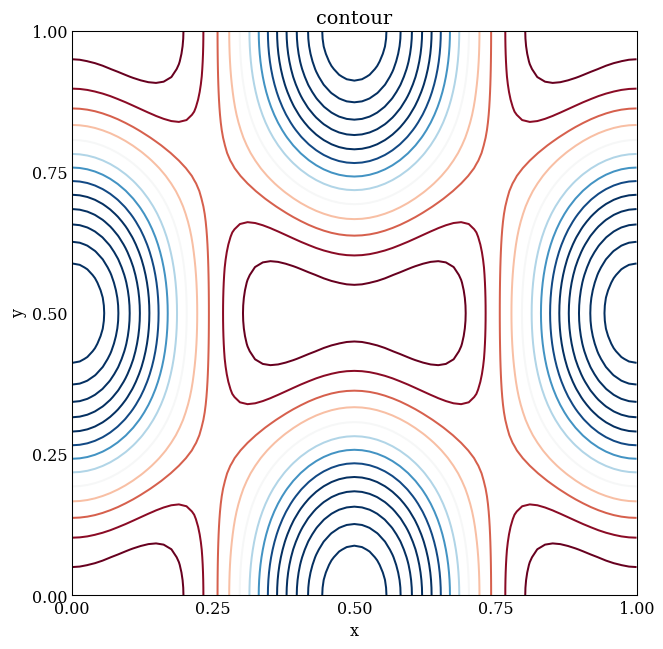
fig, ax = plt.subplots(figsize=(6, 6))
c = ax.contourf(X, Y, Z, 15, cmap=mpl.cm.RdBu, vmin=-1, vmax=1)
ax.axis('tight')
ax.set_xlabel('x')
ax.set_ylabel('y')
ax.set_title("contourf")
ax.xaxis.set_major_locator(mpl.ticker.MaxNLocator(4))
ax.yaxis.set_major_locator(mpl.ticker.MaxNLocator(4))
fig.tight_layout()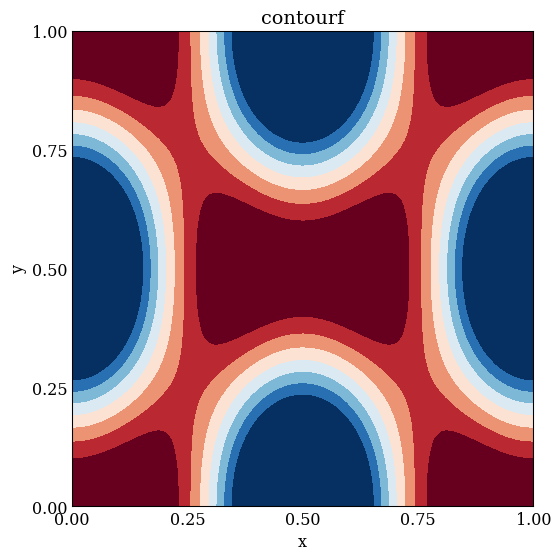
x = y = np.linspace(-10, 10, 150)
X, Y = np.meshgrid(x, y)
Z = np.cos(X) *np.cos(Y) *np.exp(-(X/5)**2 -(Y/5)**2)
P = Z[:-1, :-1]
norm = mpl.colors.Normalize(-abs(Z).max(), abs(Z).max())
def plot_and_format_axes(fig, ax, p):
ax.axis('tight')
ax.set_xlabel(r"$x$", fontsize=12)
ax.set_ylabel(r"$y$", fontsize=12)
ax.xaxis.set_major_locator(mpl.ticker.MaxNLocator(4))
ax.yaxis.set_major_locator(mpl.ticker.MaxNLocator(4))
ax.tick_params(which='both', direction='in', top=True, right=True)
cb0 = fig.colorbar(p, ax=ax)
cb0.set_label(r"$z$", fontsize=14)
cb0.set_ticks([-1, -0.5, 0, 0.5, 1])fig, axes = plt.subplots(2, 1, figsize=(7, 12))
p = axes[0].pcolor(X, Y, P, norm=norm, cmap=mpl.cm.bwr)
plot_and_format_axes(fig, axes[0], p)
axes[1].contour(X, Y, Z, np.linspace(-1.0, 1.0, 20), norm=norm, cmap=mpl.cm.bwr)
plot_and_format_axes(fig, axes[1], p)
plt.subplots_adjust(hspace=0.15)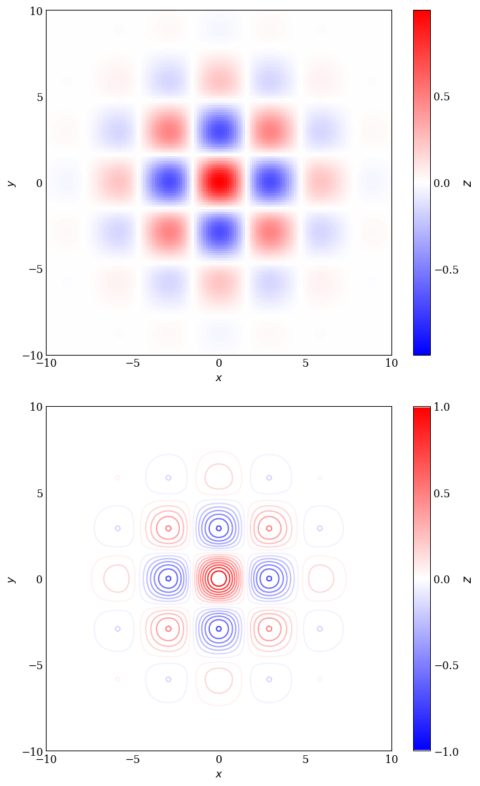
X, Y = np.meshgrid(np.linspace(-2, 2, 100), np.linspace(-2, 2, 100))
# A low hump with a spike coming out
# needs to have z/colour axis on a log scale so we see both hump and spike
Z1 = np.exp(-X**2 -Y**2)
Z2 = np.exp(-(10 *X)**2 -(10 *Y)**2)
Z = Z1 +50 *Z2
fig, axes = plt.subplots(2, 1, figsize=(7, 12))
c = axes[0].pcolor(X, Y, Z,
norm=mpl.colors.LogNorm(vmin=Z.min(), vmax=Z.max()), cmap='PuBu_r')
fig.colorbar(c, ax=axes[0])
# linear scale only shows the spike
c = axes[1].pcolor(X, Y, Z, cmap='PuBu_r')
fig.colorbar(c, ax=axes[1])
plt.subplots_adjust(hspace=0.1)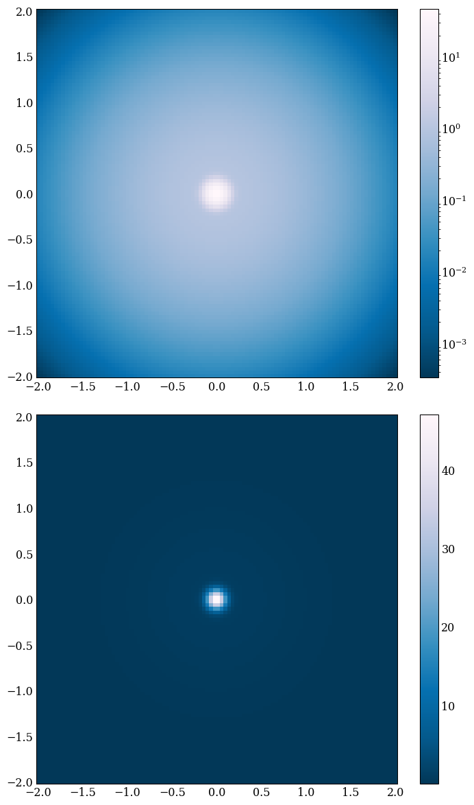
Matplotlibhas a number of built-in colormaps accessible viamatplotlib.colormaps. To get a list of all registered colormaps, you can do:from matplotlib import colormaps list(colormaps)
M.12 3D plots
In
matplotlib, \(\,\)drawing 3D graphs requires using a different axes object, namely theAxes3Dobject that is available from thempl_toolkits.mplot3d.axes3dmodule. \(\,\)We can create a 3D-ware axes instance explicitly using the constructor of theAxes3Dclass, \(\,\)by passing aFigureinstance as argument:ax = Axes3D(fig)Alternatively, \(\,\)we can use the
add_subplotfunction with theprojection='3d'argument:ax = fig.add_subplot(1, 1, 1, projection='3d')or use
plt.subplotswith thesubplot_kw={'projection':'3d'}argument:fig, ax = plt.subplots(1, 1, figsize=(6, 6), subplot_kw={'projection':'3d'})
from mpl_toolkits.mplot3d.axes3d import Axes3D
x = y = np.linspace(-3, 3, 74)
X, Y = np.meshgrid(x, y)
R = np.sqrt(X**2 +Y**2)
Z = np.sin(4 *R) /R
norm = mpl.colors.Normalize(-abs(Z).max(), abs(Z).max())
def title_and_labels(ax, title):
ax.set_title(title)
ax.set_xlabel("$x$", labelpad=0.05, fontsize=12)
ax.set_ylabel("$y$", labelpad=0.05, fontsize=12)
ax.set_zlabel("$z$", labelpad=0.05, fontsize=12)
ax.set_box_aspect(None, zoom=0.85)
ax.tick_params(axis='both', pad=0.01) fig, axes = plt.subplots(3, 1, figsize=(6, 16), subplot_kw={'projection': '3d'})
p = axes[0].plot_surface(X, Y, Z, rstride=1, cstride=1, lw=0,
antialiased=False, norm=norm, cmap=mpl.cm.Blues)
title_and_labels(axes[0], "plot_surface")
axes[1].plot_wireframe(X, Y, Z, rstride=3, cstride=3, color="darkgrey")
title_and_labels(axes[1], "plot_wireframe")
axes[2].contour(X, Y, Z, zdir='z', offset=0, norm=norm, cmap=mpl.cm.Blues)
axes[2].contour(X, Y, Z, zdir='y', offset=3, norm=norm, cmap=mpl.cm.Blues)
title_and_labels(axes[2], "contour")
plt.subplots_adjust(left=0.05, right=0.95, bottom=0.1, top=0.95, hspace=0.1) 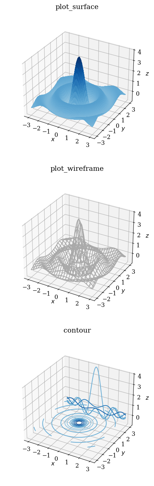
fig, axes = plt.subplots(3, 1, figsize=(6, 16), subplot_kw={'projection': '3d'})
r = np.linspace(0, 10, 100)
p = axes[0].plot(np.cos(r), np.sin(r), 6 -r)
title_and_labels(axes[0], "plot")
p = axes[1].scatter(np.cos(r), np.sin(r), 6 -r)
title_and_labels(axes[1], "scatter")
r = np.linspace(0, 6, 30)
p = axes[2].bar3d(np.cos(r), np.sin(r), np.zeros_like(r),
0.05*np.ones_like(r), 0.05*np.ones_like(r), 6 -r)
title_and_labels(axes[2], "bar3d")
plt.subplots_adjust(left=0.05, right=0.95, bottom=0.1, top=0.95, hspace=0.1)